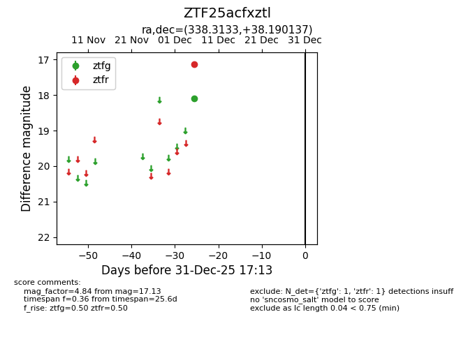
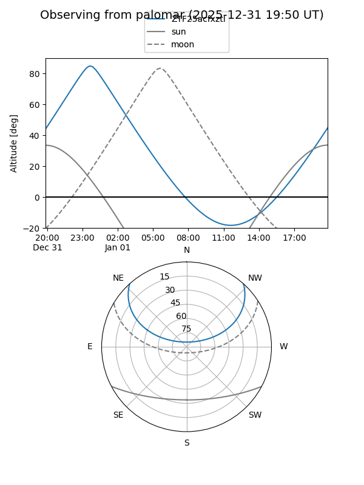

ZTF25acfxztl
Target ZTF25acfxztl at 2025-12-31 16:59
Aliases and brokers:
FINK:
Lasair:
ALeRCE:
alt names
ZTF25acfxztl (ztf,fink_ztf)
Coordinates:
equatorial (ra, dec) = 338.3133,+38.19014
equatorial (HMS+DMS) = 22:33:15.19,+38:11:24.49
galactic (l, b) = (95.1350,-17.11152)
Flags:
Photometry:
last ztfg=18.09, ztfr=17.13
1 ztfg, 1 ztfr detections
Lightcurve

Visibility


Additional plots